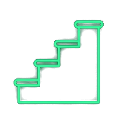
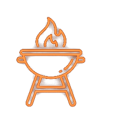

打破「寫作腦袋空空」的魔咒！掌握起承轉合與課文好詞百寶箱，
只要填空完成，就是一篇 400~500 字的生動記敘文。
臺中市梧棲區中正國小 四年級國語教學團隊
寫作不是默背，而是把腦海中溫暖的記憶，用積木拼圖組合起來！

就像一部精彩的電影，文章要有好的開始、精彩過程、意外插曲與回味無窮的收尾：
好的開始是成功的一半！先把「什麼時間、和誰、帶著什麼心情」清楚點出。
每到【中秋節】，窗外的月亮像一面明亮的圓鏡，我們全家都會聚在一起。
這一天，我和【爸爸、媽媽、哥哥】，帶著期待的心情準備烤肉。
想到可以和親愛的家人聚在一起，我的心情就像【高聲歡呼一樣快樂】！
拖動下方滑桿，看看「流水帳開頭」與「優質鷹架開頭」的巨大差異：
今天是中秋節。我們全家一起去烤肉。我們帶了肉跟菜。我們先烤肉，然後又吃肉，接著又吃香腸。吃完香腸之後，哥哥去洗手，媽媽在旁邊坐著。我們吃很多東西，我覺得烤肉很好吃，大家都很飽。
每到中秋節，窗外的月亮像一面明亮的圓鏡，我們全家都會聚在一起。這一天，我和爸爸、媽媽、哥哥，帶著期待的心情準備烤肉。想到可以和親愛的家人聚在一起，我的心情就像高聲歡呼一樣快樂！
讓文章「香氣四溢」的秘密：打開你的眼睛、鼻子、嘴巴與皮膚感受！

記敘文不只寫「吃吃喝喝」，更能寫出對生活的反思與好習慣！
平鋪直敘會讓人想打哈欠！加入一點意外或插曲，文章立刻活潑生動起來。
最讓我難忘的是大家一起烤棉花糖時【新奇】的體驗。
正當我們帶著【好奇】的心情轉動竹籤時，突然一陣風吹過來，棉花糖靠得太近，【竟然】著火了！
哥哥看見後非常【驚訝】，大家【克服】了手忙腳亂的緊張，趕緊把火吹熄，棉花糖【彷彿】變成了一顆黑色小煤炭。
把生活中的科學好奇寫進作文，文章層次立刻超越一般同學！
好的結尾就像一首好歌的最後一個音符，餘音繞樑、溫暖人心。
這次的家庭活動，讓我深深覺得【美妙動人】。
這次活動不但讓我【大開眼界】，也讓我更加體會到家人的愛與陪伴是世界上最珍貴的寶物。
常言道：「快樂不一定要去很遠的地方，只要一家人在一起，就是最美好的時光！」
抓出「一逗到底（C4-PUNCT-01）」與標點誤用！請選出標點符號使用最正確的句子：
拖動滑桿！見證填空完成的學習單，如何順暢轉化為作文簿上的連貫篇章：
【第一段】每到（中秋節），窗外的月亮像一面明亮的圓鏡，我們全家都會聚在一起。這一天，我和（爸爸、媽媽、哥哥），帶著期待的心情準備烤肉。想到可以和親愛的家人聚在一起，我的心情就像（高聲歡呼一樣快樂）！
【第二段】活動一開始，我們先清洗新鮮的（蔬菜、水果）...爸爸烤肉時（大顯身手），媽媽細心調味讓我（大飽口福）...
每到中秋節，窗外的月亮像一面明亮的圓鏡，我們全家都會聚在一起。這一天，我和爸爸、媽媽、哥哥，帶著期待的心情準備烤肉。想到可以和親愛的家人聚在一起，我的心情就像高聲歡呼一樣快樂！
活動一開始，我們先清洗新鮮的蔬菜、水果，接著整齊擺放在桌上。大家分工合作，爸爸在烤肉時大顯身手，媽媽則細心調味，讓我大飽口福...
只要把四個段落依照順序連起來，一篇結構完整、感情真摯的佳作就誕生了！
每到中秋節，窗外的月亮像一面明亮的圓鏡，我們全家都會聚在一起。這一天，我和爸爸、媽媽、哥哥，帶著期待的心情準備烤肉。想到可以和親愛的家人聚在一起，我的心情就像高聲歡呼一樣快樂！
活動一開始，我們先清洗新鮮的蔬菜、水果，接著整齊擺放在桌上。大家分工合作，爸爸在烤肉時大顯身手，媽媽則細心調味，讓我大飽口福。這時，我看見金黃的火光在木炭間跳躍，空氣中煙霧瀰漫。一陣陣烤肉的香氣飄過來，吃著熱呼呼的食物，讓人覺得無比舒服。大家吃多少烤多少、愛惜食物不浪費，現場成群結隊的家人有說有笑，真是美好！
這次的活動中，最讓我難忘的是大家一起烤棉花糖時新奇的體驗。正當我們帶著好奇的心情轉動竹籤時，突然一陣風吹過來，棉花糖靠得太近，竟然著火了！哥哥看見後非常驚訝，大家克服了手忙腳亂的緊張，趕緊把火吹熄，棉花糖彷彿變成了一顆黑色小煤炭。爸爸笑著說明火候與受熱的原理，這場趣味插曲逗得大家合不攏嘴，過程實在太好玩了！
這次的家庭活動，讓我深深覺得美妙動人。這次活動不但讓我大開眼界，也讓我更加體會到家人的愛與陪伴是世界上最珍貴的寶物。我發現，一家人能夠健康平安的圍坐在一起，就是最平淡卻深刻的幸福。常言道：「快樂不一定要去很遠的地方，只要一家人在一起，就是最美好的時光！」我真希望下次還能和家人一起舉辦更多溫馨有趣的家庭活動！
祝福每位小朋友都能寫出屬於自己最幸福動人的篇章 ✨